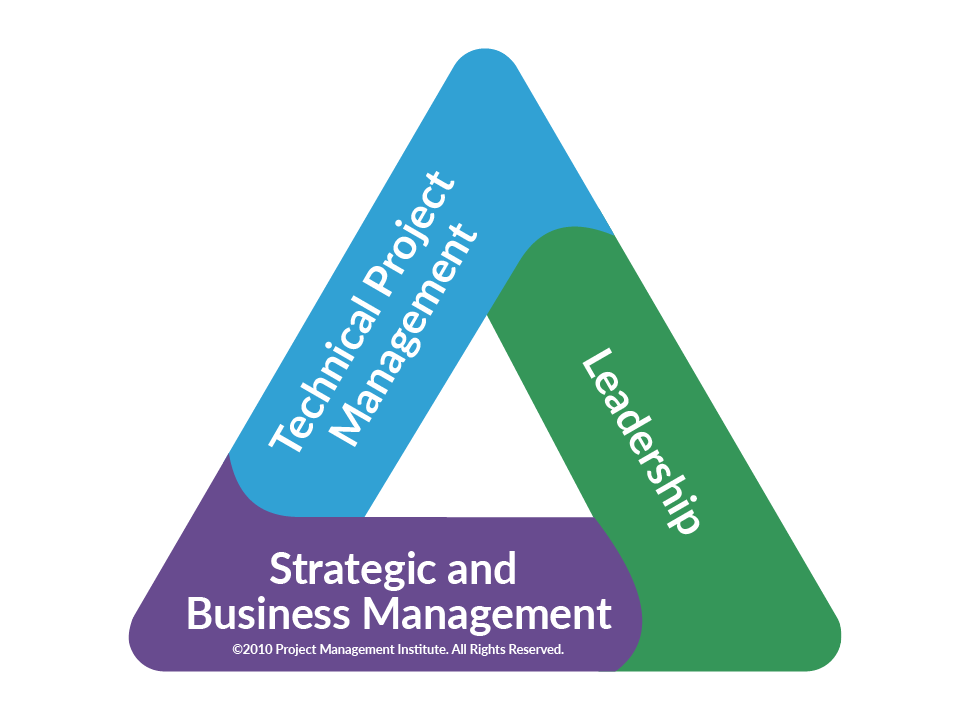

Project Management |
|
| Navigacija |
PMI Talent TriangleWhile technical skills are core to project and program management, PMI research tells us they're not enough in today's increasingly complex and competitive global marketplace. Companies are seeking added skills in leadership and business intelligence - competencies that can support longer-range strategic objectives that contribute to the bottom line. |
| © Goran Secujski Pocetna | Pravila privatnosti | |